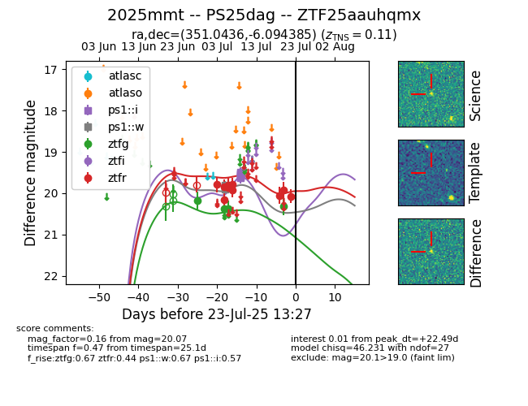

Target ZTF25aauhqmx at 2025-07-23 13:27, see:
FINK: fink-portal.org/ZTF25aauhqmx
Lasair: lasair-ztf.lsst.ac.uk/objects/ZTF25aauhqmx
ALeRCE: alerce.online/object/ZTF25aauhqmx
TNS: wis-tns.org/object/2025mmt
YSE: ziggy.ucolick.org/yse/transient_detail/2025mmt
alt names
ZTF25aauhqmx (ztf,fink)
2025mmt (tns,yse)
PS25dag (panstarrs)
coordinates:
equatorial (ra, dec) = (351.0436,-6.09439)
galactic (l, b) = (74.3902,-60.45753)
photometry
last ps1::i=19.59, ps1::w=19.81, ztfg=20.32, ztfr=20.07
8 ps1::i, 4 ps1::w, 4 ztfg, 10 ztfr detections
